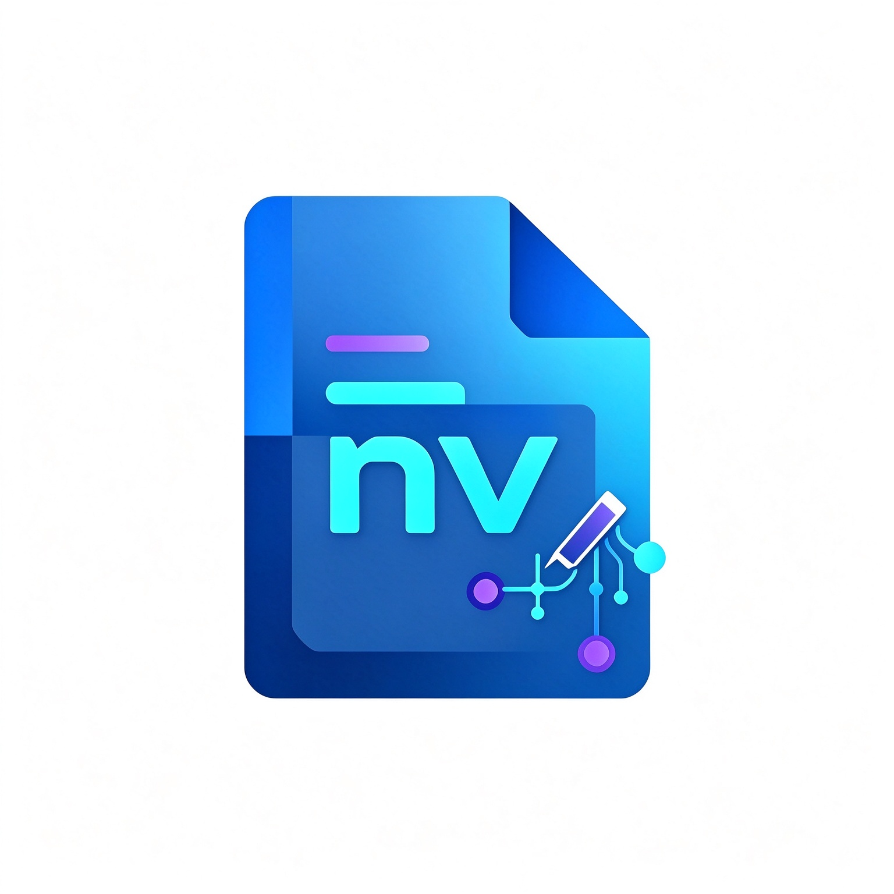

多种格式，一个入口
文本、代码、PDF、图片、Office 与电子书，各自用合适的方式阅读或编辑。
查看格式
notepadview 给文件一个好位置一个工作台 · 多种文件 · 各得其所
写 Markdown、读代码、查看文档与电子书。Notepad View 把常用文件放进同一个清爽工作区，让内容先被看见，让思路不被工具打断。
格式不同，不必意味着工具四散。编辑、预览、查阅与整理，在一个熟悉的桌面工作区里自然衔接。你可以更快找到内容，也更容易回到上一次停下的地方。
按内容选择合适的体验：需要编辑的进入编辑区，适合查看的使用只读预览。
从纯文本到常见开发文件，让内容清晰可读，编辑不被格式干扰。
查看 DOCX、XLSX；其他 Office 格式可走只读转换阅读路径。
快速浏览页面、图像与图表；需要时放大查看，不改动原文件。
EPUB 按章节与目录阅读；MOBI、AZW3、FB2 可在配置阅读引擎的版本中转换后阅读。
格式支持会因应用版本与运行时配置而异；查看器与编辑器的能力并不相同。
WRITE / PREVIEW / REPEAT
Markdown 源码和预览并肩而坐。标题、列表、表格、引用、代码、链接与图片，一边编辑，一边看到它们成为清晰的文档。
当格式适合编辑，就交给编辑器；当它更适合阅读，就用专属的只读预览。边界清楚，原文件也更安心。
PDF 与图片可在应用内预览。DOCX、XLSX 提供只读查看能力，适合快速浏览正文、工作表与资料。
不在查看器里编辑原件EPUB 提供章节与目录式阅读。其他电子书与更多 Office 格式，可通过对应转换引擎进入只读阅读流程。
DRM 电子书不在支持范围关于格式与版本 部分旧版 Office、MOBI、AZW3、FB2 阅读需要 LibreOffice 或 Calibre 运行时。是否随发行包提供取决于具体构建；加密/DRM 文件不支持，复杂排版也可能与原软件略有差异。
了解边界文件会变多，思路不必重来。Notepad View 帮你把常用资料、正在编辑的内容和阅读位置安排得井井有条。
打开文件或拖放到工作区，文本、代码与可预览文件各自进入合适的视图。
用多个页签和文件分类收纳资料，切换时仍保留各自的内容与状态。
工作区记录文档、选区和视图等状态；电子书阅读位置也可随工作区恢复。
LESS SWITCHING. MORE READING.
Notepad View 的目标是让常用文件更容易阅读与处理，不意味着所有格式都能编辑或完美还原。以下能力会因文件内容及构建版本而异。
01 只读格式不能在应用内写回原文件。
02 旧 Office 与部分电子书的阅读可能需要额外打包运行时。
03 加密/DRM 电子书及复杂专有对象不保证可读。
04 转换后的分页与排版可能和原始软件略有不同。
门户为软件介绍页。此处未提供下载服务；请以实际发布版本和随附说明为准。